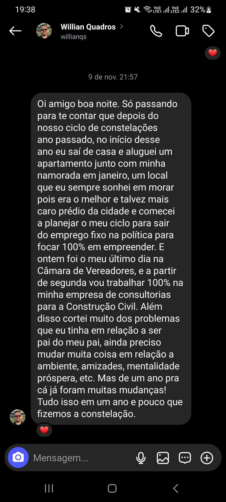
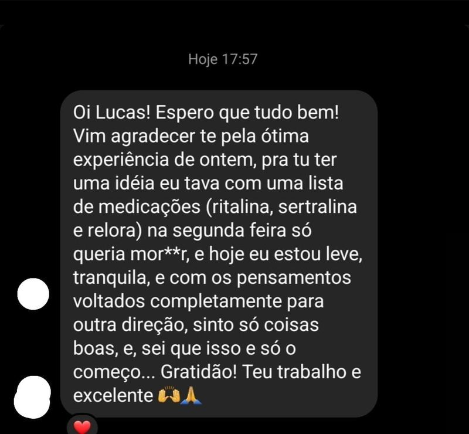

Descubra a raiz inconsciente do que trava a sua vida.
Assista o vídeo e entenda como funciona o atendimento
Atendimento 100% online
Relações que drenam. Dinheiro que não flui. Cansaço que não passa. Pensamentos que não param. A sensação de fazer tudo certo e mesmo assim não avançar.
Por muito tempo você acreditou que isso era quem você é.
Mas tudo isso é reflexo de uma causa mais profunda, inconsciente. Sem encontrá-la, não existe libertação real.
A transformação começa na raiz.
Você não precisa passar anos em terapia. Você precisa encontrar a origem e tratar o que está escondido.
Quero encontrar a minha raizO que você terá em 50 a 60 minutos
Etapa 1
O Mapa
Um espaço seguro e sigiloso. Com perguntas precisas, mapeio os bloqueios inconscientes que governam as suas relações, o seu financeiro e a sua energia.
Etapa 2
A Descoberta
A etapa mais importante. Acessamos a raiz do que te trava e já construímos juntos a solução para as suas questões.
Etapa 3
O Plano de Ação
Você não sai só com clareza. Sai com um plano concreto, o caminho exato para destravar a sua evolução em todas as áreas da vida.
Segurança e privacidade total
Histórias reais de transformação


Oportunidade especial
De R$ 397,00
R$147
Atendimento individual completo · 50 a 60 minutos
Garantir meu atendimentoVagas limitadas na agenda

C. Lucas Mello
Fundador do Instituto Solaryz
Parabéns por chegar até aqui.
Eu conheço esse lugar por dentro. Vivi os vícios. Vivi relações que me drenavam. Tentei salvar meus pais e carreguei por anos um peso que não era meu. Vivi uma vida que não prosperava. Fiz tudo o que mandavam, me esforcei, estudei, lutei. E mesmo assim, a vida não andava.
Até que eu entendi: o problema era o meu interno. Tive que mudar a minha mentalidade e a minha energia.
O que trava a sua vida não está no que você vê. Está na raiz inconsciente, no seu sistema familiar, na sua mentalidade e na sua energia.
Dessa descoberta nasceu o Método Solaryz, a integração de Mentalidade Sistêmica, Kundalini Solaryz, Psicanálise e Física Quântica em um caminho único. Mais de 2.000 pessoas no Brasil e no Uruguai já passaram por esse processo.
Meu trabalho não é aliviar sintomas. É te integrar à libertação e à evolução.
Se você chegou até aqui, já deu o primeiro passo. Seja bem-vindo ao Solaryz.
Agendar minha sessão agora